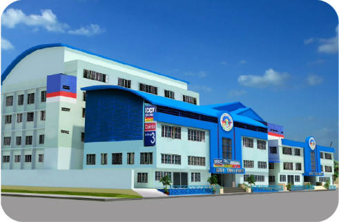
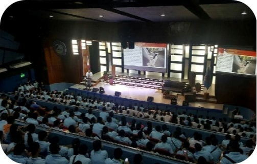
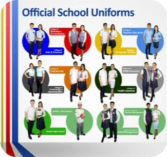
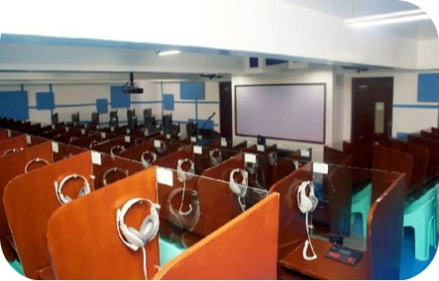

<html></html>
<head>
<title>Home</title>
<head>

<body background="Background.jpg">
<font color=blue>
<h1 align =center>ICCT COLLEGES</h1>
</font>
<hr>
<center>
<table border=5 bgcolor=lightgray width=60%>
<th><a href="Academics.html">ACADEMICS</a></th>
<th><a href="Admission.html">ADMISSION</a></th>
<th><a href="About us.html">ABOUT US</a></th>
<th><a href="Laboratory.html">LABORATORY</a></th>
<th><a href="Contact us.html">CONTACT US</a></th>

</table>
</center>
<hr>
<center>
<table border=5 bgcolor=white cellpadding=10 width=75%>
<td>
<marquee bahavior="scroll" direction="left">




</marquee>
</td>
</table>
</center>

</font>
<center>
<h2><footer>Welcome To ICCT Colleges</footer></h2>
</center>
<font>
<center>
<h2><footer>This is a tertiary education provider with campuses located in the Province of Rizal, Philippines. In Rizal, it has campuses in the municipality of Cainta, Sumulong (Cainta), San Mateo, Cogeo, Antipolo, Taytay, Binangonan, and Angono.</footer></h2></center></font>

</body>
</html>